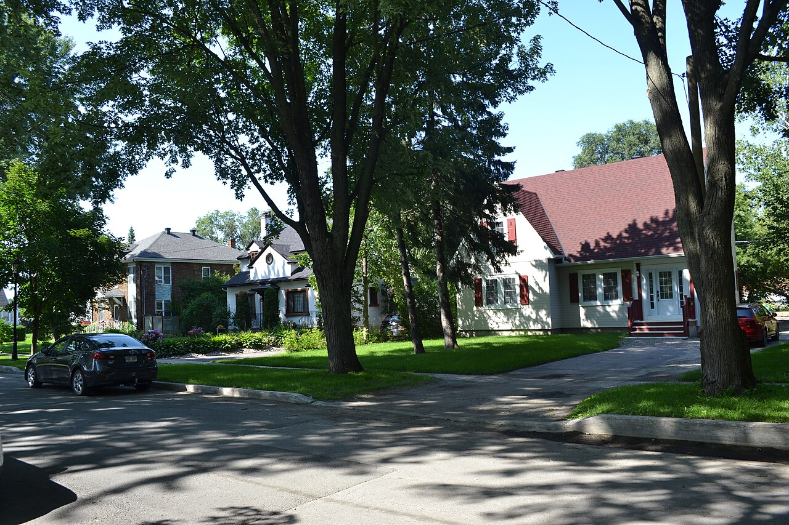

CIP executive's house (maison de cadre de la CIP) La maison de cadre de la CIP

124, rue Poplar, in the site patrimonial du Quartier-du-Moulin (2018) — © Cantons-de-l'Est, Wikimedia Commons, CC BY-SA 4.0. Stands in for the fiche's photograph of 105, rue Poplar (Passerelles Coopérative en patrimoine. 2023).

Houses on rue Poplar, site patrimonial du Quartier-du-Moulin (2018) — © Cantons-de-l'Est, Wikimedia Commons, CC BY-SA 4.0. The setback and the double row of street trees are among the site's listed characteristic elements.
The paper company's house for its managers: an Arts and Crafts house of one and a half to two and a half storeys, its rectangular or L plan broken by projections, under a medium to steep roof with perpendicular gables and flared coyaux, in dark-painted shingle or board, with carved shutters. Found in the Gatineau sector and particularly inside the site patrimonial du Quartier-du-Moulin, whose citation lists the setback from the street and the double row of pavement trees among the elements it protects.
Built at the end of the 1920s, these houses were intended to lodge the executives of the Canadian International Paper (CIP), whose mill stood adjacent to — and gave its name to — the Quartier-du-Moulin. The building type belongs to the American Arts & Crafts current, whose stylistic and architectural characteristics were imported from the United Kingdom and adapted to the North American continent, and which favours natural materials such as wood in the form of shingles or boards, brick, or stone. Architectural magazines presenting house models were hugely popular in the United States and Canada in the early 20th century and spread the Arts & Crafts style through the anglophone world; the Toronto architect William Lyon Somerville, one of CIP's retained architects and the presumed designer of these houses, probably chose this style for the Quartier-du-Moulin residences. The movement's founding principles — the ideal of a return to nature and the appeal of a pastoral way of life — suited the garden-city principles the company followed in planning its towns, and details such as the roof coyaux and shed dormers found on some houses may vaguely evoke a thatched roof.
| Tenure / plan | single-family |
|---|---|
| Storeys | 1.5–2.5 |
| Roof form | gabled-multi |
| Roof pitch | – |
| Window proportion | – |
| Principal cladding | wood-shingle, wood-shiplap, wood-clapboard |
| Roofing | – |
| Garage | – |
| Lot width | – |
| Front setback | – |
| Side setback | – |
| Front yard green | – |
What Ville de Gatineau says about this type
- Construites à la fin des années 1920, ces maisons étaient destinées à loger les cadres de la Canadian International Paper (CIP) dont l’usine était adjacente et éponyme au Quartier-du-Moulin. Leur type bâti s’inscrit dans la mouvance américaine Arts & Crafts, dont les caractéristiques stylistiques et architecturales ont été importées du Royaume-Uni et adaptées au continent nord-américain. Ce style architectural privilégie des matériaux naturels tels que le bois sous forme de bardeaux ou de planches, la brique ou encore la pierre.
- Les magazines architecturaux qui présentent différents modèles de maisons au début du 20e siècle connaissent une grande popularité aux États-Unis et au Canada et contribuent à la diffusion du style Arts & Crafts dans le monde anglo-saxon. Le torontois William Lyon Somerville, un des architectes attitrés de la CIP et concepteur présumé de ces maisons, a probablement privilégié ce style architectural pour les résidences du Quartier-du-Moulin. Les principes fondateurs de ce mouvement, tels que l’idéal du retour à la nature et l’attrait pour un mode de vie pastoral, conviennent parfaitement aux principes de cité-jardin suivis par la compagnie dans la planification de ses villes. Par exemple, les coyaux de toiture et les lucarnes rampantes qu’on retrouve sur certaines maisons pourraient évoquer vaguement un toit de chaume.
- Present in the Gatineau sector, and more particularly within the Quartier-du-Moulin heritage site.
- Présence dans le secteur de Gatineau, et plus particulièrement dans le site patrimonial du Quartier-du-Moulin.
- Roof form
- Medium-pitched to steep roof with perpendicular gables (frequent).
- Asymmetrical gable (occasional).
- Presence of flared eaves (coyaux) (frequent).
- Height
- One and a half to two and a half storeys.
- Ground plan
- Rectangular or L-shaped plan with numerous projections (frequent).
- Asymmetrical plan (frequent).
- Projections
- Outdoor space in the form of a loggia, or the main roof extending out over the stoop (frequent).
- Porch sheltering an entrance (rare).
- Columns and square posts supporting the porches (occasional).
- Oriel windows (rare).
- Forme du toit
- Toit à pente moyenne à abrupte et pignons perpendiculaires (fréquent).
- Pignon asymétrique (occasionnel).
- Présence de coyaux (fréquent).
- Hauteur
- Un étage et demi à deux étages et demi.
- Plan au sol
- Plan rectangulaire ou en L avec nombreuses saillies (fréquent).
- Plan asymétrique (fréquent).
- Saillies
- Espace extérieur en loggia ou toit principal se prolongeant au-dessus du perron (fréquent).
- Porche protégeant une entrée (rare).
- Colonnes et poteaux carrés soutenant les porches (occasionnel).
- Oriels (rare).
- Wooden casings framing the openings (frequent).
- Corner boards (frequent).
- Shutters or wooden blinds, ornamented with a carved motif (frequent).
- Presence of pilasters set into the façade at the entrance (occasional).
- Chambranles de bois encadrant les ouvertures (fréquent).
- Planches cornières (fréquent).
- Contrevents ou volet en bois, ornementés d'un motif sculpté (fréquent).
- Présence de pilastres encastrés dans la façade au niveau de l'entrée (occasionnel).
- Doors
- Main door plain or with side leaves (tierces) (frequent).
- Windows
- Sash (guillotine) windows, single (occasional), paired (frequent) or multiple (occasional), with 4 panes (rare), 8 panes (occasional) or 12 panes (frequent).
- Dormers of varied forms (shed dormer, with a pendant window, etc.) (occasional).
- Portes
- Porte principale simple ou avec tierces (fréquent).
- Fenêtres
- Fenêtres à guillotine, simples (occasionnel), jumelées (fréquent) ou multiples (occasionnel), avec 4 carreaux (rare), 8 carreaux (occasionnel) ou 12 carreaux (fréquent).
- Lucarnes de formes variées (rampante, à fenêtre pendante, etc.) (occasionnel).
- Wall
- Exterior cladding of painted wood shingles (frequent).
- Exterior cladding of painted rabbeted boards or painted wood clapboard (frequent). The claddings are painted a dark colour.
- Roof
- Asphalt shingle covering (originally).
- Mural
- Revêtement extérieur en bardeaux de bois peinturés (fréquent).
- Revêtement extérieur en planches à feuillure peinturées ou en clins de bois peinturés (fréquent). Les parements sont peints de couleur foncée.
- Toit
- Recouvrement en bardeaux d’asphalte (à l'origine).
Encoded from the City's 2023 fiche for this type. The five columns follow the fiche's own sections — répartition géographique → siting, volumétrie → massing, ornementation → articulation, ouvertures → openings, revêtement → materials — and the French beneath each English list is the fiche's wording. Three normalisations are applied to that French and are the only changes made to it: hyphenation lost at line breaks is rejoined, the figure-key letters set mid-sentence (A, B, C …) are removed, and apostrophes are written ’ throughout. The fiche's « Période de construction principale » is a bar graphic whose extent is not recoverable from the text, so no construction period is encoded and the phase rests on the historical-context section instead.
- Prefer: Extensions should be built at the rear of the building and remain barely visible from the street. In the case of a contemporary extension at the rear, the new volume, while leaving precedence to the original one, could take inspiration from the scale and forms of the original projections or secondary volumes.
- Prefer: Maintain and keep the original components of the projections and galleries as well as the massing.
- Prefer: Respect the principles of asymmetry when adding a new volume.
- Avoid: Avoid removing a projection, significantly changing the form of its openings, or covering it with materials that do not correspond to the initial materials.
- Avoid: Avoid an addition on the front façade that would harm the perception of the original volume.
- Prefer: When replacing the windows, choose sash (guillotine) models. Favour a model with a number of panes similar to the original or to other houses of the same model built in the same period.
- Prefer: Respect and maintain the original arrangement of the openings.
- Avoid: Avoid replacing sash (guillotine) windows with casement windows or with any other type of opening mechanism.
- Avoid: Avoid modifying the dimensions of the windows or blocking them up.
- Prefer: Favour a cladding material in keeping with the identified original materials. Other complementary materials could however be considered for the addition of a new volume.
- Prefer: Favour architectural-type shingles when replacing the roof covering.
- Avoid: Avoid choosing a cladding whose appearance or finish does not correspond to the pre-identified original cladding materials for the original volumes.
- Prefer: The original ornamentation should be maintained and kept, or else replaced when its preservation is not possible.
- Avoid: Avoid adding ornaments that do not correspond to the pre-identified originals or that never existed on the building.
- Avoid: Avoid removing original ornaments without replacing them.
- Les agrandissements devraient être faits à l'arrière du bâtiment et demeurer peu visibles de la rue. Dans le cas d'un agrandissement contemporain à l'arrière, le nouveau volume, tout en laissant préséance à celui d’origine, pourrait s'inspirer du gabarit et des formes des saillies ou des volumes secondaires d'origine.
- Entretenir et maintenir les composantes d'origine des saillies et galeries ainsi que la volumétrie.
- Respecter les principes d’asymétrie dans l’ajout d’un nouveau volume.
- Éviter le retrait d'une saillie, le changement significatif de la forme de ses ouvertures ou encore son recouvrement par des matériaux ne correspondant pas aux matériaux initiaux.
- Éviter un ajout en façade qui nuirait à la perception du volume original.
- Au moment de remplacer les fenêtres, choisir des modèles à guillotine. Favoriser un modèle avec un nombre similaire de carreaux par rapport à l'original ou à d'autres maisons du même modèle construites à la même époque.
- Respecter et maintenir la disposition originale des ouvertures.
- Éviter de remplacer des fenêtres à guillotine par des fenêtres à battants ou par tout autre type de mode d'ouverture.
- Éviter de modifier les dimensions des fenêtres ou de les murer.
- Privilégier un matériau de recouvrement en accord avec les matériaux d'origine identifiés. D'autres matériaux complémentaires pourraient cependant être envisagés pour l'ajout d'un nouveau volume.
- Privilégier des bardeaux de type architecturaux lors du remplacement du revêtement de toiture.
- Éviter de choisir un revêtement dont l'aspect ou le fini ne correspond pas aux matériaux de revêtement d'origine préidentifiés pour les volumes originaux.
- Les ornementations originales devraient être entretenues et maintenues ou encore remplacées lorsque leur préservation n'est pas possible.
- Éviter d'ajouter des ornements ne correspondant pas aux originaux préidentifiés ou n’ayant jamais existé sur le bâtiment.
- Éviter de retirer des ornements originaux sans les remplacer.
Same word elsewhere
- Stone house of the French tradition (Baie-D'Urfé)
- Rural house of French inspiration (Charlesbourg (Trait-Carré))
- Québec house of neoclassical inspiration (Charlesbourg (Trait-Carré))
- Mansard house (Charlesbourg (Trait-Carré))
- Cubic house (Four Square) (Charlesbourg (Trait-Carré))
- Industrial vernacular house (Charlesbourg (Trait-Carré))
- Central-gable house (maison à pignon central) (Gatineau)
- Complex gabled-roof house (maison à toit complexe à pignon) (Gatineau)
- Mansard-roofed house with gable wall on the façade (maison à toit mansardé avec mur pignon en façade) (Gatineau)
- One-and-a-half-storey wooden matchstick house (maison allumette en bois d'un étage et demi) (Gatineau)
- Wood matchstick house of two to two and a half storeys (maison allumette en bois de deux à deux étages et demi) (Gatineau)
- Brick matchbox house, two to two and a half storeys (maison allumette en brique de deux à deux étages et demi) (Gatineau)
- Cubic house (maison cubique) (Gatineau)
- Flat-roofed wood house (maison en bois à toit plat) (Gatineau)
- Flat-roofed brick house (maison en brique à toit plat) (Gatineau)
- L-plan house with a two-slope (gable) roof (maison avec plan en L à toit à deux versants) (Gatineau)
- English-revival stone house (Hampstead)
- Postwar detached house (Hampstead)
- House of French inspiration (Île d'Orléans)
- Traditional Québec house of neoclassical influence (Île d'Orléans)
- Boomtown house (Île d'Orléans)
- Cubic house (Four Square) (Île d'Orléans)
- Stone house of the French tradition (Lachine (borough of Montréal))
- Bourgeois brick house in the Victorian taste (Lachine (borough of Montréal))
- The maison « Gameroff » — contractor-built house of the 1950s–1970s quarters (Lachine (borough of Montréal))
- Village house of Longue-Pointe (Mercier–Hochelaga-Maisonneuve (borough of Montréal))
- Company workers' house of the Hudon mill, rue Saint-Germain (Mercier–Hochelaga-Maisonneuve (borough of Montréal))
- Veterans' house, to the Wartime Housing Limited model (Mercier–Hochelaga-Maisonneuve (borough of Montréal))
- Garden City House (Town of Mount Royal)
- Faubourg House (Town of Mount Royal)
- Canadian House (Town of Mount Royal)
- New England House (Town of Mount Royal)
- Georgian House (Town of Mount Royal)
- English Manor House (Town of Mount Royal)
- Bungalow (Town of Mount Royal)
- Cottage (Town of Mount Royal)
- Split-Level (Town of Mount Royal)
- Prairie House (Town of Mount Royal)
- Modern house on the flank (Outremont (borough of Montréal))
- Faubourg house (Le Plateau-Mont-Royal (borough of Montréal))
- Detached urban house (Le Plateau-Mont-Royal (borough of Montréal))
- Row urban house (Le Plateau-Mont-Royal (borough of Montréal))
- Stone house of the French tradition (Pointe-Claire)
- Traditional Québec house of the village core (Pointe-Claire)
- Veterans' house on the Wartime Housing Limited model, c. 1947 (Pointe-Claire)
- One-storey rural house of French inspiration (Québec City)
- Urban stone house of French inspiration (Québec City)
- Franco-Québécois transition house (Québec City)
- London-type terrace house (Québec City)
- Québécois neoclassical house (Québec City)
- Mansard-roofed house (Québec City)
- Rudimentary faubourg house (Québec City)
- Cubic house (Four Square) (Québec City)
- Flat-roofed faubourg house (Québec City)
- Dutch Colonial Revival house (Québec City)
- Maison shoebox (Rosemont–La Petite-Patrie (borough of Montréal))
- Detached house of the Cité-Jardin du Tricentenaire (Rosemont–La Petite-Patrie (borough of Montréal))
- Traditional French and Québécois house (Saint-Lambert)
- Mansard-roofed house of Second Empire influence (Saint-Lambert)
- Queen Anne style house (Saint-Lambert)
- Boomtown house with false mansard (Saint-Lambert)
- Boomtown house with crown (parapet or cornice) (Saint-Lambert)
- Cubic (Four Square) house (Saint-Lambert)
- House of Arts and Crafts influence (Saint-Lambert)
- The modern house (including the bungalow) (Saint-Lambert)
- Two-storey clapboard village house of the îlot villageois (Sainte-Anne-de-Bellevue)
- Traditional Québec house of the village core (Sainte-Anne-de-Bellevue)
- Garden City Press workers' house (Sainte-Anne-de-Bellevue)
- Village house (Le Sud-Ouest (Montréal))
- Boomtown house (Le Sud-Ouest (Montréal))
- Urban house (Le Sud-Ouest (Montréal))
- Apartment house (Le Sud-Ouest (Montréal))
- Town house (post-1960 project housing) (Le Sud-Ouest (Montréal))
- Veterans' house (Le Sud-Ouest (Montréal))
- Lower-town company house (Ross and Macdonald, 1918–1923) (Témiscaming)
- Upper-district company house (Somerville, 1925–1950) (Témiscaming)
- Stone house in the French tradition (Vieux-Terrebonne)
- Maison cossue of rue Saint-Louis (Vieux-Terrebonne)
- Neoclassical Québécois stone house (Vieux-Terrebonne)
- Small-gabarit vernacular village house of the Bas-de-la-Côte (Vieux-Terrebonne)
- French-regime house in stone (colonial français) (Trois-Rivières)
- Boomtown house (Trois-Rivières)
- Cubic house (Four-square) (Trois-Rivières)
- French-regime stone house (Ville-Marie (Montréal))
- Greystone terrace (Ville-Marie (Montréal))
- Workers' house with carriage gate (Ville-Marie (Montréal))
- Rural or village house (Villeray–Saint-Michel–Parc-Extension)
- Post-war house (Villeray–Saint-Michel–Parc-Extension)
- Greystone row house (Westmount)
- Mansard-roofed house of Second Empire influence (Westmount)
- Queen Anne house (Westmount)
- Richardsonian Romanesque house (Westmount)
- Semi-detached brick house (Westmount)
- Tudor Revival house (Westmount)
- Arts and Crafts semi-detached house (Westmount)
Same form elsewhere
- Upper-district company house (Somerville, 1925–1950) (Témiscaming)
Same period elsewhere
- Family A company houses (models A1–A8) (Arvida (borough of Jonquière, Saguenay))
- Family B company houses (models B1–B4) (Arvida (borough of Jonquière, Saguenay))
- Family C company houses (models C1–C6) (Arvida (borough of Jonquière, Saguenay))
- Family D company houses (models D1–D5) (Arvida (borough of Jonquière, Saguenay))
- Family M houses (models M1–M11), regionalist neo-vernacular (Arvida (borough of Jonquière, Saguenay))
- Family F semi-detached houses (models F1–F18) (Arvida (borough of Jonquière, Saguenay))
- Families P, Q, S and T (paired and single models along boulevard du Saguenay and rues Powell, Neilson, Berthier, Parks, Joule) (Arvida (borough of Jonquière, Saguenay))
- Family R row houses (models R2–R4) (Arvida (borough of Jonquière, Saguenay))
- Families E, G, H, J, K, L, N, Y and Z (Arvida (borough of Jonquière, Saguenay))
- Wartime Housing Ltd. houses (Arvida (borough of Jonquière, Saguenay))
- Postwar bungalow (Baie-D'Urfé)
- Mansard house (Charlesbourg (Trait-Carré))
- Boomtown building (Charlesbourg (Trait-Carré))
- Cubic house (Four Square) (Charlesbourg (Trait-Carré))
- Industrial vernacular house (Charlesbourg (Trait-Carré))
- Vernacular cottage (Charlesbourg (Trait-Carré))
- Post-war residence (bungalow) (Charlesbourg (Trait-Carré))
- English summer villa on the lake shore (Dorval)
- Postwar bungalow (Dorval)
- English-revival stone house (Hampstead)
- Postwar detached house (Hampstead)
- American vernacular cottage (Île d'Orléans)
- Arts and Crafts architecture (Île d'Orléans)
- Boomtown house (Île d'Orléans)
- Cubic house (Four Square) (Île d'Orléans)
- Modernism (Île d'Orléans)
- Québec regionalism (Île d'Orléans)
- Postwar bungalow (Lachine (borough of Montréal))
- Bourgeois brick house in the Victorian taste (Lachine (borough of Montréal))
- Brick duplex and triplex, detached or in continuous alignment (Lachine (borough of Montréal))
- Small one-storey brick house, wider than deep, with a crown (Lachine (borough of Montréal))
- The maison « Gameroff » — contractor-built house of the 1950s–1970s quarters (Lachine (borough of Montréal))
- Beaux-Arts house (Lévis)
- Boomtown house (Lévis)
- Cubic house (maison cubique) (Lévis)
- Flat-roofed house (Lévis)
- Arts & Crafts house (Arts & métiers) (Lévis)
- Wartime housing dwelling (Lévis)
- Modernist building (Lévis)
- Bourgeois residence of the cité, Beaux-Arts (Mercier–Hochelaga-Maisonneuve (borough of Montréal))
- Shop-and-dwellings block on the commercial artery (Mercier–Hochelaga-Maisonneuve (borough of Montréal))
- Three-storey workers' plex (Mercier–Hochelaga-Maisonneuve (borough of Montréal))
- Brick bungalow of the 1950s Mercier developments (Mercier–Hochelaga-Maisonneuve (borough of Montréal))
- Veterans' house, to the Wartime Housing Limited model (Mercier–Hochelaga-Maisonneuve (borough of Montréal))
- Garden City House (Town of Mount Royal)
- Faubourg House (Town of Mount Royal)
- Faubourg Apartment Block (Town of Mount Royal)
- Canadian House (Town of Mount Royal)
- New England House (Town of Mount Royal)
- New England Apartment Block (Town of Mount Royal)
- Georgian House (Town of Mount Royal)
- English Manor House (Town of Mount Royal)
- Bungalow (Town of Mount Royal)
- Cottage (Town of Mount Royal)
- Split-Level (Town of Mount Royal)
- Prairie House (Town of Mount Royal)
- Modern Apartment Block (Town of Mount Royal)
- Semi-detached single-family house (Outremont (borough of Montréal))
- Semi-detached duplex (Outremont (borough of Montréal))
- Detached single-family house (Outremont (borough of Montréal))
- Opulent detached residence (Outremont (borough of Montréal))
- Apartment building (conciergerie) (Outremont (borough of Montréal))
- Modern house on the flank (Outremont (borough of Montréal))
- Apartment block without courtyard (Le Plateau-Mont-Royal (borough of Montréal))
- Apartment block with courtyard (Le Plateau-Mont-Royal (borough of Montréal))
- Small apartment building (Le Plateau-Mont-Royal (borough of Montréal))
- Postwar bungalow (Pointe-Claire)
- Cubique — massive symmetrical block, imposing gallery, low hipped roof (Pointe-Claire)
- Village Boomtown house, two storeys, flat or low-pitch roof behind a crown (Pointe-Claire)
- Veterans' house on the Wartime Housing Limited model, c. 1947 (Pointe-Claire)
- Boomtown house and shop-house (Québec City)
- Cubic house (Four Square) (Québec City)
- Flat-roofed faubourg house (Québec City)
- Industrial-vernacular cottage (Québec City)
- Neo-Queen Anne house (Québec City)
- Neo-Renaissance house and mixed-use block (Québec City)
- Neo-Tudor house (Québec City)
- Plex — superposed dwellings (Québec City)
- Apartment block with a central stairwell (Québec City)
- Arts and Crafts house (Québec City)
- Bungalow (Québec City)
- Camp and villégiature chalet (Québec City)
- Dutch Colonial Revival house (Québec City)
- International Style house (residential) (Québec City)
- Neo-Georgian house (Québec City)
- Prairie house (Frank Lloyd Wright inspiration) (Québec City)
- Wartime Housing house (Cape Cod) (Québec City)
- Maison shoebox (Rosemont–La Petite-Patrie (borough of Montréal))
- Triplex with exterior stair (Rosemont–La Petite-Patrie (borough of Montréal))
- Duplex with exterior stair (Rosemont–La Petite-Patrie (borough of Montréal))
- Duplex with interior stair and paired entrances (Rosemont–La Petite-Patrie (borough of Montréal))
- Detached house of the Cité-Jardin du Tricentenaire (Rosemont–La Petite-Patrie (borough of Montréal))
- Semi-detached duplex with rear garage, Art déco manner (Rosemont–La Petite-Patrie (borough of Montréal))
- Conciergerie (Rosemont–La Petite-Patrie (borough of Montréal))
- Mansard-roofed house of Second Empire influence (Saint-Lambert)
- Queen Anne style house (Saint-Lambert)
- Boomtown house with false mansard (Saint-Lambert)
- Boomtown house with crown (parapet or cornice) (Saint-Lambert)
- Cubic (Four Square) house (Saint-Lambert)
- House of Arts and Crafts influence (Saint-Lambert)
- Multi-dwelling building of plex type (Saint-Lambert)
- The "King Cottage" (Saint-Lambert)
- The modern house (including the bungalow) (Saint-Lambert)
- Two-storey clapboard village house of the îlot villageois (Sainte-Anne-de-Bellevue)
- Garden City Press workers' house (Sainte-Anne-de-Bellevue)
- Postwar bungalow (Sainte-Anne-de-Bellevue)
- English summer villa on the lake shore (Senneville)
- Arts and Crafts country estate (Senneville)
- Postwar bungalow (Senneville)
- Boomtown house (Le Sud-Ouest (Montréal))
- Duplex with interior stair (Le Sud-Ouest (Montréal))
- Three-storey duplex (Le Sud-Ouest (Montréal))
- Triplex with interior stair (Le Sud-Ouest (Montréal))
- Urban house (Le Sud-Ouest (Montréal))
- Apartment house (Le Sud-Ouest (Montréal))
- Duplex with exterior stair (Le Sud-Ouest (Montréal))
- Multiplex (Le Sud-Ouest (Montréal))
- Raised duplex (Le Sud-Ouest (Montréal))
- Triplex with exterior stair (Le Sud-Ouest (Montréal))
- Apartment building (lift-served) (Le Sud-Ouest (Montréal))
- Conciergerie (walk-up apartment block) (Le Sud-Ouest (Montréal))
- Town house (post-1960 project housing) (Le Sud-Ouest (Montréal))
- Veterans' house (Le Sud-Ouest (Montréal))
- Lower-town company house (Ross and Macdonald, 1918–1923) (Témiscaming)
- Upper-district company house (Somerville, 1925–1950) (Témiscaming)
- The 1908 reconstruction block — brick, flat-roofed, built all at once (Trois-Rivières)
- Boomtown house (Trois-Rivières)
- Immeuble à logements — the plex of superposed flats (Trois-Rivières)
- Cubic house (Four-square) (Trois-Rivières)
- Arts & Crafts house (Trois-Rivières)
- Three-storey plex with exterior stair (Verdun (borough of Montréal))
- Two semi-detached duplexes, or a three-dwelling building, with deep front balconies (Verdun (borough of Montréal))
- Three-storey commercial block with dwellings above and alcove balconies (Verdun (borough of Montréal))
- National Housing Act house — 1½ storeys, brick, to prize-winning plans (Verdun (borough of Montréal))
- Residential tower, île des Sœurs (Verdun (borough of Montréal))
- Row duplex of the 1950s (Verdun (borough of Montréal))
- Freestanding greystone mansion (Ville-Marie (Montréal))
- Greystone terrace (Ville-Marie (Montréal))
- Shoebox of the early 20th century (Villeray–Saint-Michel–Parc-Extension)
- Boomtown house (Villeray–Saint-Michel–Parc-Extension)
- Plex of the early 20th century (Villeray–Saint-Michel–Parc-Extension)
- Apartment building of the early 20th century — the conciergerie (Villeray–Saint-Michel–Parc-Extension)
- Shoebox of the mid-20th century (Villeray–Saint-Michel–Parc-Extension)
- Post-war house (Villeray–Saint-Michel–Parc-Extension)
- Post-war semi-detached house (Villeray–Saint-Michel–Parc-Extension)
- Plex of the mid-20th century (Villeray–Saint-Michel–Parc-Extension)
- Apartment building of the mid-20th century — the walk-up (Villeray–Saint-Michel–Parc-Extension)
- Semi-detached brick house (Westmount)
- Eclectic prestige house of the summit (Westmount)
- Tudor Revival house (Westmount)
- Arts and Crafts semi-detached house (Westmount)
- Interwar apartment house (Westmount)
- Modernist residential tower (Westmount)
Same style elsewhere
- English summer villa on the lake shore (Dorval)
- English-revival stone house (Hampstead)
- Arts and Crafts architecture (Île d'Orléans)
- Arts & Crafts house (Arts & métiers) (Lévis)
- Garden City House (Town of Mount Royal)
- Opulent detached residence (Outremont (borough of Montréal))
- Arts and Crafts house (Québec City)
- Prairie house (Frank Lloyd Wright inspiration) (Québec City)
- House of Arts and Crafts influence (Saint-Lambert)
- English summer villa on the lake shore (Senneville)
- Arts and Crafts country estate (Senneville)
- Upper-district company house (Somerville, 1925–1950) (Témiscaming)
- Arts & Crafts house (Trois-Rivières)
- Arts and Crafts semi-detached house (Westmount)